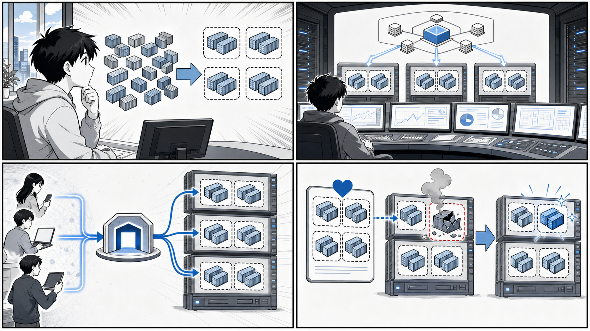

第 5 章 Kubernetes 入門¶

Pod、Node、Service、制御プレーン、宣言的な望ましい状態が Kubernetes の基本になります。
はじめに¶
前章まででは、Docker による単一ホスト上のコンテナ実行と、Docker Compose や Swarm による複数コンテナの管理を学びました。しかし実運用のシステムでは、複数のサーバー（ホスト）にまたがってコンテナを配置し、障害が起きても自動で復旧させ、トラフィックの増減に応じてコンテナ数を増減させる、といった「オーケストレーション」が求められます。
この章では、コンテナオーケストレーションのデファクトスタンダードである Kubernetes を学びます。Kubernetes は Google が社内で培ったコンテナ運用のノウハウをもとに開発され、現在は CNCF（Cloud Native Computing Foundation）が中立的に運営する OSS です。「k8s（ケーエイツ）」と省略表記されることもあります。
本章のゴールは、Kubernetes を構成する基本的なリソース（Pod、ReplicaSet、Deployment、Service、Ingress）の役割と関係を理解し、実際に YAML マニフェストを書いて kubectl で適用できるようになることです。説明には、書籍『Docker/Kubernetes 実践コンテナ開発入門（第 2 版）』のサンプルリポジトリ gihyo-docker-kuberbetes（ディレクトリ ch05/）と、応用例として echo アプリの Kustomize 定義（apps/echo/k8s/kustomize/）を引用します。
学ぶ順序は次のとおりです。
- Kubernetes とは何か、なぜ必要か（5.1）
- ローカル環境で Kubernetes を動かす準備（5.2）
- Kubernetes の基本概念とクラスタ構成（5.3〜5.5）
- アプリケーションを動かすリソース（5.6 Pod 〜 5.8 Deployment）
- ネットワークを担うリソース（5.9 Service、5.10 Ingress）
それぞれのリソースは独立した部品ではなく、上位のリソースが下位のリソースを生成・管理するという階層構造になっています。この「関係」を意識しながら読み進めてください。
5.1 Kubernetes とは¶
Kubernetes は、コンテナ化されたアプリケーションのデプロイ、スケーリング、運用を自動化するためのオーケストレーションシステムです。「オーケストレーション」とは、指揮者（オーケストレーター）が多数の奏者（コンテナ）をまとめて 1 つの楽曲（システム）を演奏させるイメージから来ています。
Docker 単体や Docker Compose では、基本的に 1 台のホスト上でコンテナを動かします。しかし、本番システムでは次のような要求が生じます。
- 複数のホスト（サーバー）にコンテナを分散して配置したい
- あるコンテナが落ちても、自動的に再起動・再配置してほしい
- 負荷に応じてコンテナの数を増やしたり減らしたりしたい（スケーリング）
- 新しいバージョンを無停止でリリースしたい（ローリングアップデート）
- コンテナ群への通信を、安定したエンドポイントに集約したい（サービスディスカバリ・ロードバランシング）
Kubernetes は、これらをまとめて引き受けてくれます。最大の特徴は 宣言的（declarative） な運用モデルです。利用者は「最終的にこうあってほしい」という望ましい状態（desired state）を YAML マニフェストで宣言します。すると Kubernetes は現在の状態を絶えず監視し、宣言された状態に一致するよう自動的に調整し続けます。この「あるべき状態へ収束させ続ける」仕組みを リコンサイル（reconciliation）ループ と呼びます。
たとえば「echo というアプリを 3 つ動かす」と宣言しておけば、そのうち 1 つが障害で停止しても、Kubernetes が不足を検知して新しいコンテナを起動し、常に 3 つの状態を保とうとします。命令的（imperative）に「コンテナを起動せよ」「再起動せよ」と都度指示するのではなく、ゴールだけを示す点が宣言的モデルの本質です。
5.2 ローカル環境で Kubernetes を実行する¶
Kubernetes を学ぶには、手元で動かせる環境があると便利です。本番のような複数ノードのクラスタを用意しなくても、ローカル PC 上に単一ノードの Kubernetes クラスタを構築できるツールがいくつかあります。
代表的な選択肢は次のとおりです。
- Docker Desktop：設定画面で「Enable Kubernetes」にチェックを入れるだけで、ローカルに単一ノードの Kubernetes クラスタが起動します。Docker をすでに使っている場合に最も手軽です。
- Rancher Desktop：オープンソースのデスクトップアプリで、Kubernetes（k3s ベース）とコンテナランタイムを同梱しています。ライセンス上の制約を避けたい場合の選択肢になります。
- kind（Kubernetes IN Docker）：Docker コンテナ自体を Kubernetes のノードとして使う軽量ツールです。CI 環境や、複数ノード構成を手軽に試したいときに向いています。
これらのインストール手順や OS ごとの細かな設定は環境差が大きいため、本書では 付録 A に詳細を委ねます。ここでは「いずれかのローカル Kubernetes が起動済みで、kubectl がそのクラスタに接続できる状態」になっていることを前提に進めます。
kubectl の基本操作¶
kubectl（キューブコントロール、または「キューブシーティーエル」）は、Kubernetes クラスタを操作するためのコマンドラインツールです。本章で繰り返し使う基本操作を先に押さえておきましょう。
まず、接続先のクラスタが正しいか確認します。
# 現在の接続先（コンテキスト）を確認する
kubectl config current-context
# クラスタを構成するノードの一覧を表示する
kubectl get nodes
リソースの作成・取得・確認・削除は、次の 5 つを覚えておけば本章の操作はほぼ網羅できます。
# マニフェスト（YAML）を適用してリソースを作成・更新する
kubectl apply -f simple-pod.yaml
# リソースの一覧を取得する（pod / replicaset / deployment / service / ingress など）
kubectl get pod
# リソースの詳細（イベントや状態の遷移を含む）を確認する
kubectl describe pod simple-echo
# コンテナのログを表示する（複数コンテナの Pod では -c でコンテナ名を指定）
kubectl logs simple-echo -c echo
# マニフェストで作成したリソースを削除する
kubectl delete -f simple-pod.yaml
apply は宣言的な操作で、同じマニフェストを何度適用しても結果が一定になる（冪等）点が重要です。マニフェストを書き換えて再度 apply すれば、差分だけが反映されます。トラブル時はまず kubectl describe（リソースに紐づくイベントが見られる）と kubectl logs（アプリのログが見られる）を確認するのが定石です。
5.3 Kubernetes の概念¶
Kubernetes には多くのリソース（オブジェクト）が登場しますが、本章で扱う中核は次の 5 つです。これらは互いに関係し合っています。
| リソース | 役割 |
|---|---|
| Pod | コンテナの最小デプロイ単位。1 つ以上のコンテナをまとめる |
| ReplicaSet | 指定した数の Pod を維持する（レプリカ管理） |
| Deployment | ReplicaSet を管理し、ローリングアップデートやロールバックを担う |
| Service | Pod 群への安定したアクセス先（仮想 IP・名前）を提供する |
| Ingress | クラスタ外部からの HTTP(S) アクセスを Service に振り分ける |
これらの関係を図にすると次のようになります。上位のリソースが下位のリソースを生成・管理し、ラベルセレクタによって紐づけられています。本章を通じて何度も立ち戻る、最も重要な図です。
![uml diagram]()
この章ではこの図を下から上へ（Pod → ReplicaSet → Deployment → Service → Ingress の順に）組み立てていきます。
5.4 Kubernetes クラスタと Node¶
Kubernetes の実行環境全体を クラスタ（Cluster） と呼びます。クラスタは、大きく分けて 2 種類のマシン（Node）から構成されます。
- コントロールプレーン（Control Plane）：クラスタ全体を管理する頭脳です。API サーバー（
kube-apiserver、kubectlの接続先）、状態を保存するデータストア（etcd）、リソースを監視し調整するコントローラ（kube-controller-manager）、Pod をどの Node に配置するか決めるスケジューラ（kube-scheduler）などで構成されます。 - ワーカー Node（Node）：実際にコンテナ（Pod）が動くマシンです。各 Node では、コントロールプレーンと通信してコンテナを起動・監視する
kubeletと、ネットワークを担うkube-proxyが動作しています。
利用者は kubectl を通じてコントロールプレーンの API サーバーに「望ましい状態」を伝えます。すると、コントローラとスケジューラが協調して、適切な Node 上に Pod を配置します。どの Node に配置されるかは Kubernetes が自動的に判断するため、利用者が個々のサーバーを意識する必要はありません。
ローカル環境（Docker Desktop など）では、コントロールプレーンとワーカー Node が同じ 1 台に同居した単一ノード構成になります。kubectl get nodes を実行すると、その 1 つの Node が表示されます。
# Node の一覧を確認する（ローカル環境では 1 つ表示される例）
kubectl get nodes
5.5 Namespace¶
Namespace（名前空間） は、1 つのクラスタの中を論理的に分割する仕組みです。同じクラスタを複数のチームや用途（開発・検証など）で共有する場合に、リソースをグループ分けして名前の衝突を避けたり、アクセス権限やリソース制限を分けたりできます。
クラスタには最初からいくつかの Namespace が用意されています。
# Namespace の一覧を表示する
kubectl get namespace
代表的なものは次のとおりです。
default：明示的に Namespace を指定しなかったときに使われる既定の名前空間。本章のサンプルもここに作成されます。kube-system：Kubernetes 自身のコンポーネント（ダッシュボードや DNS など）が動く名前空間。kube-public：すべてのユーザーが読み取れる名前空間。
kubectl のコマンドに --namespace（短縮形 -n）を付けると、対象の Namespace を切り替えられます。たとえば、ch05/install-dashboard.sh では Kubernetes Dashboard を導入したうえで、kube-system Namespace の Pod を確認しています（出典：gihyo-docker-kuberbetes/ch05/install-dashboard.sh）。
# kube-system 名前空間の Pod を、ラベルで絞り込んで確認する
kubectl get pod --namespace=kube-system -l k8s-app=kubernetes-dashboard
本章のサンプルでは Namespace を明示しないため、すべて default に作成されます。kubectl get pod のように -n を省略した場合は default が対象になる、と覚えておけば十分です。
5.6 Pod¶
Pod（ポッド） は、Kubernetes でアプリケーションを動かす最小のデプロイ単位です。1 つの Pod は 1 つ以上のコンテナをまとめたもので、同じ Pod 内のコンテナは同じネットワーク（同じ IP アドレス）とストレージを共有します。そのため、Pod 内のコンテナどうしは localhost で通信できます。
「なぜコンテナではなく Pod が単位なのか」というと、密接に連携する複数のコンテナ（たとえば、リバースプロキシとアプリ本体）を 1 セットとして扱いたいケースがあるからです。本章のサンプルは、まさにその構成です。
次のマニフェストは、nginx（リバースプロキシ）と echo（アプリ本体）の 2 つのコンテナを 1 つの Pod にまとめたものです（出典：gihyo-docker-kuberbetes/ch05/simple-pod.yaml）。
apiVersion: v1
kind: Pod
metadata:
name: simple-echo
spec:
containers:
- name: nginx
image: gihyodocker/nginx:latest
env:
- name: BACKEND_HOST
value: localhost:8080
ports:
- containerPort: 80
- name: echo
image: gihyodocker/echo:latest
ports:
- containerPort: 8080
マニフェストの構造を読み解きましょう。
apiVersion/kind：このリソースの種別を表します。Pod はv1（コア API グループ）のPodです。metadata.name：リソースの名前です。ここではsimple-echo。spec.containers：この Pod が持つコンテナの定義リストです。nginxコンテナは環境変数BACKEND_HOSTにlocalhost:8080を指定しています。同じ Pod 内のechoコンテナがポート 8080 で待ち受けているため、localhost経由でアクセスできるわけです。これが「Pod 内のコンテナはネットワークを共有する」ことの具体例です。
このマニフェストを適用し、状態を確認してみます。
# Pod を作成する
kubectl apply -f simple-pod.yaml
# Pod の状態を確認する（READY 列が 2/2 になれば 2 コンテナとも起動済み）
kubectl get pod
# 詳細やイベントを確認する
kubectl describe pod simple-echo
kubectl get pod の出力例（値は環境により異なります）は次のようなイメージです。
NAME READY STATUS RESTARTS AGE
simple-echo 2/2 Running 0 30s
ただし、Pod を単体で作成する運用は実務ではほとんど行いません。Pod は障害で停止しても自動では復旧しないからです。Pod の数を維持し、自動復旧させるために登場するのが、次の ReplicaSet です。
5.7 ReplicaSet¶
ReplicaSet（レプリカセット） は、指定した数の同一 Pod（レプリカ）が常に動いている状態を維持するリソースです。Pod が落ちれば新しい Pod を起動し、多すぎれば余分な Pod を停止して、宣言した数（replicas）に収束させ続けます。
次のマニフェストは、5.6 の Pod と同じ 2 コンテナ構成を、3 つのレプリカとして維持する ReplicaSet です（出典：gihyo-docker-kuberbetes/ch05/simple-replicaset.yaml）。
apiVersion: apps/v1
kind: ReplicaSet
metadata:
name: echo
labels:
app: echo
spec:
replicas: 3
selector:
matchLabels:
app: echo
template:
metadata:
labels:
app: echo
spec:
containers:
- name: nginx
image: gihyodocker/nginx:latest
env:
- name: BACKEND_HOST
value: localhost:8080
ports:
- containerPort: 80
- name: echo
image: gihyodocker/echo:latest
ports:
- containerPort: 8080
Pod のマニフェストとの差分が、ReplicaSet を理解する鍵です。
kindがPodからReplicaSetに変わり、apiVersionもapps/v1になっています。spec.replicas: 3：維持したい Pod の数を宣言します。spec.template：生成する Pod の「ひな型」です。よく見ると、5.6 の Pod のspec.containersがそのままここに入れ子になっています。ReplicaSet はこのテンプレートをもとに Pod を量産します。spec.selector.matchLabelsとspec.template.metadata.labels：ここが最重要です。ReplicaSet は「app: echoというラベルを持つ Pod」を自分の管理対象として認識します（selector）。一方、生成する Pod には同じapp: echoというラベルを付けます（templateのlabels）。この ラベルとセレクタが一致 することで、ReplicaSet は自分が作った Pod を管理できるのです。
# ReplicaSet を作成する
kubectl apply -f simple-replicaset.yaml
# ReplicaSet と、それが生成した Pod を確認する
kubectl get replicaset
kubectl get pod
ここで、3 つの Pod のうち 1 つを手動で削除してみると、ReplicaSet がすぐに不足を検知して新しい Pod を起動し、再び 3 つに戻すことが確認できます。これが宣言的モデルとリコンサイルループの威力です。
# Pod を 1 つ削除しても、ReplicaSet が自動で補充して 3 つに戻す
kubectl delete pod <削除したい Pod 名>
kubectl get pod
ラベルによる管理対象の使い分け¶
ラベルは単なる名札ではなく、リソースを束ねる「セレクタの条件」として機能します。ch05/simple-replicaset-with-label.yaml は、app: echo に加えて release ラベル（spring / summer）を使い、同じアプリの中でリリース系統を分けて管理する例です（出典：gihyo-docker-kuberbetes/ch05/simple-replicaset-with-label.yaml）。
apiVersion: apps/v1
kind: ReplicaSet
metadata:
name: echo-spring
labels:
app: echo
release: spring
spec:
replicas: 1
selector:
matchLabels:
app: echo
release: spring
template:
metadata:
labels:
app: echo
release: spring
spec:
containers:
- name: nginx
image: gihyodocker/nginx:latest
env:
- name: BACKEND_HOST
value: localhost:8080
ports:
- containerPort: 80
- name: echo
image: gihyodocker/echo:latest
ports:
- containerPort: 8080
このファイルには echo-spring（replicas: 1）と echo-summer（replicas: 2）の 2 つの ReplicaSet が --- で区切って定義されています。echo-spring のセレクタは app: echo かつ release: spring の両方を満たす Pod だけを管理対象にするため、echo-summer の Pod とは混ざりません。ラベルの組み合わせで管理対象を精密に絞り込める、という点を押さえておきましょう。
ただし、ReplicaSet を直接運用することも実務では稀です。アプリのバージョンアップ（イメージの差し替え）を安全に行うには、さらに上位の Deployment を使います。
5.8 Deployment¶
Deployment（デプロイメント） は、ReplicaSet を管理する上位リソースです。Deployment を使うと、アプリケーションの ローリングアップデート（無停止での段階的なバージョン更新）と ロールバック（問題があったときに前のバージョンへ戻す操作）が可能になります。実務でアプリを動かす際は、この Deployment が事実上の標準です。
次のマニフェストは、5.7 の ReplicaSet とほぼ同じ内容を Deployment として定義し、レプリカ数を 4 にしたものです（出典：gihyo-docker-kuberbetes/ch05/simple-deployment.yaml）。
apiVersion: apps/v1
kind: Deployment
metadata:
name: echo
labels:
app: echo
spec:
replicas: 4
selector:
matchLabels:
app: echo
template:
metadata:
labels:
app: echo
spec:
containers:
- name: nginx
image: gihyodocker/nginx:latest
env:
- name: BACKEND_HOST
value: localhost:8080
ports:
- containerPort: 80
- name: echo
image: gihyodocker/echo:latest
ports:
- containerPort: 8080
ReplicaSet のマニフェストとの差分は、ほぼ kind が Deployment になっただけです。spec.replicas・spec.selector・spec.template の構造はそのまま引き継がれています。これは偶然ではなく、Deployment が内部で ReplicaSet を生成し、その ReplicaSet が Pod を生成する という三段の管理構造になっているためです。
# Deployment を作成する
kubectl apply -f simple-deployment.yaml
# Deployment → ReplicaSet → Pod が連鎖的に生成されることを確認する
kubectl get deployment
kubectl get replicaset
kubectl get pod
Deployment の真価は、テンプレート（とくにコンテナイメージのタグ）を書き換えて再度 kubectl apply したときに発揮されます。Deployment は新しいテンプレートに対応する 新しい ReplicaSet を作り、新 ReplicaSet の Pod を少しずつ増やしながら旧 ReplicaSet の Pod を減らしていきます。これにより、サービスを止めずにバージョンを入れ替えられます。問題が起きた場合は、kubectl rollout undo で前の ReplicaSet に戻せます。
# ロールアウト（更新）の進行状況を確認する
kubectl rollout status deployment echo
# 直前のバージョンに戻す（ロールバック）
kubectl rollout undo deployment echo
「Pod を直接作らず、ReplicaSet も直接作らず、Deployment を宣言する」――これが Kubernetes でアプリを動かす際の基本姿勢です。
5.9 Service¶
ここまでで、Deployment によって複数の Pod を安定して動かせるようになりました。しかし、Pod には別の課題があります。Pod は障害復旧やスケーリングのたびに作り直され、その都度 IP アドレスが変わります。クライアントが個々の Pod の IP を直接指定していては、通信先が安定しません。
この問題を解決するのが Service（サービス） です。Service は、ラベルセレクタで選んだ Pod 群に対して、安定した仮想 IP（ClusterIP）と DNS 名 を提供します。クライアントは Service の名前にアクセスするだけでよく、Service が背後の Pod 群へ自動的にロードバランシングしてくれます。Pod が入れ替わっても、Service のアドレスは変わりません。
次のマニフェストは、app: echo ラベルを持つ Pod 群への入口となる Service です（出典：gihyo-docker-kuberbetes/ch05/simple-service.yaml）。
apiVersion: v1
kind: Service
metadata:
name: echo
spec:
selector:
app: echo
ports:
- name: http
port: 80
ポイントは spec.selector です。app: echo というラベルを持つ Pod（=5.8 の Deployment が生成した Pod）を、この Service の振り分け先（エンドポイント）として自動的に登録します。Deployment と Service は親子関係にあるのではなく、同じラベルを介して間接的に結びついている 点に注意してください。ReplicaSet がラベルで Pod を「管理」したのに対し、Service はラベルで Pod を「宛先として選択」しているわけです。
# Service を作成する
kubectl apply -f simple-service.yaml
# Service と、選択された Pod（エンドポイント）を確認する
kubectl get service
kubectl describe service echo
クラスタ内の別の Pod からは、echo（同一 Namespace なら名前だけ）という DNS 名で、この Service 経由で echo アプリにアクセスできます。
なお、Service にはいくつかタイプがあります。上記のように type を省略した場合は ClusterIP となり、クラスタ内部からのみアクセスできます。クラスタ外部に公開したい場合は NodePort や LoadBalancer といったタイプもありますが、HTTP のルーティングをより柔軟に扱う仕組みが次の Ingress です。
5.10 Ingress¶
ClusterIP の Service はクラスタ内部からしかアクセスできません。クラスタの外から、たとえばブラウザで HTTP アクセスさせたい場合に使うのが Ingress（イングレス） です。Ingress は、ホスト名やパスに応じて外部からのリクエストを適切な Service へ振り分ける、L7（HTTP/HTTPS）レベルのルーティングルールを定義します。
5.10.1 Ingress コントローラーと IngressClass¶
ここで重要なのは、Ingress リソースを作っただけでは何も起きない という点です。Ingress はあくまで「こういうルールでルーティングしてほしい」という宣言であり、そのルールを実際に解釈してリクエストを捌くのは Ingress コントローラー という別のコンポーネントです。代表的な実装が ingress-nginx（NGINX ベースの Ingress コントローラー）です。
ch05/ingress-nginx.sh は、この ingress-nginx をクラスタに導入するスクリプトです（出典：gihyo-docker-kuberbetes/ch05/ingress-nginx.sh）。
kubectl apply -f https://raw.githubusercontent.com/kubernetes/ingress-nginx/nginx-0.16.2/deploy/mandatory.yaml
kubectl apply -f https://raw.githubusercontent.com/kubernetes/ingress-nginx/nginx-0.16.2/deploy/provider/cloud-generic.yaml
このように、外部で公開されているマニフェストを kubectl apply することで、ingress-nginx コントローラー本体（Deployment や Service など一式）がクラスタにインストールされます。なお、ここで参照しているバージョン（nginx-0.16.2）は書籍刊行時点のものです。現在のローカル環境では、より新しいバージョンの ingress-nginx を導入してください。Docker Desktop など環境によっては、導入手順が異なる場合があります。
複数の Ingress コントローラーを併用できるよう、現在の Kubernetes では IngressClass という仕組みでコントローラーを指定します。後述の応用例（apps/echo/k8s/kustomize/ingress.yaml）では、spec.ingressClassName: nginx と書くことで「この Ingress は nginx コントローラーに処理させる」と明示しています。
5.10.2 Ingress を通じたアクセス¶
Ingress コントローラーを導入したら、ルーティングルールを定義する Ingress リソースを作成します。次のマニフェストは、ホスト名 ch05.gihyo.local への HTTP アクセスを、5.9 で作成した echo Service（ポート 80）へ転送する定義です（出典：gihyo-docker-kuberbetes/ch05/simple-ingress.yaml）。
apiVersion: extensions/v1beta1
kind: Ingress
metadata:
name: echo
spec:
rules:
- host: ch05.gihyo.local
http:
paths:
- path: /
backend:
serviceName: echo
servicePort: 80
spec.rules の中で「ホスト ch05.gihyo.local に来た、パス / のリクエストを、echo という Service のポート 80 へ送る」と宣言しています。これにより、外部 → Ingress → Service → Pod という経路でリクエストが届きます。
# Ingress を作成する
kubectl apply -f simple-ingress.yaml
# Ingress の状態を確認する
kubectl get ingress
動作確認は、ch05.gihyo.local という名前が解決できるようにしたうえで HTTP アクセスします。ローカルでは hosts ファイルにホスト名を登録するか、curl の --resolve / -H "Host: ..." を使う方法が一般的です。
# Host ヘッダーを指定して Ingress 経由でアクセスする（例）
curl http://localhost -H "Host: ch05.gihyo.local"
新しい API バージョンと Kustomize での記述¶
上記の simple-ingress.yaml は apiVersion: extensions/v1beta1 を使っており、これは書籍刊行当時の古い API です。現在の Kubernetes ではこの API は削除されており、Ingress は networking.k8s.io/v1 で記述します。フィールド構造も少し変わっているため、新しい書き方を echo アプリの応用例で確認しておきましょう（出典：apps/echo/k8s/kustomize/ingress.yaml）。
apiVersion: networking.k8s.io/v1
kind: Ingress
metadata:
name: echo
labels:
app.kubernetes.io/name: echo
spec:
ingressClassName: nginx
rules:
- host: echo.gihyo.local
http:
paths:
- pathType: Prefix
path: /
backend:
service:
name: echo
port:
number: 80
旧 API との違いは次のとおりです。
spec.ingressClassName: nginxで、5.10.1 で触れた IngressClass を明示しています。pathsの各エントリにpathType: Prefix（パスの前方一致）が必須になりました。backendの指定がserviceName/servicePortから、service.name/service.port.numberという入れ子の構造に変わりました。
この echo の応用例では、Deployment・Service・Ingress を kustomization.yaml でまとめて管理しています（出典：apps/echo/k8s/kustomize/）。kubectl apply -k で Kustomize ディレクトリを指定すると、3 つのマニフェストを一括適用できます。
# Kustomize ディレクトリを一括適用する
kubectl apply -k apps/echo/k8s/kustomize/
この応用例では、ラベルに app.kubernetes.io/name: echo という Kubernetes 推奨の命名規約（well-known labels）を採用し、kustomization.yaml の labels 設定で全リソースへ一括付与しています。本章で学んだ「ラベルとセレクタによる紐づけ」の考え方は、API バージョンが新しくなっても変わらない普遍的な原則です。
まとめ¶
本章では、Kubernetes の基本概念と中核となる 5 つのリソースを、サンプルマニフェストを通じて学びました。要点を整理します。
- Kubernetes は、宣言的な「望ましい状態」を維持し続けるコンテナオーケストレーションシステムである。利用者は YAML マニフェストでゴールを宣言し、Kubernetes がリコンサイルループで現実をそれに収束させる。
- クラスタ はコントロールプレーンとワーカー Node から成り、Namespace でクラスタ内を論理分割できる。ローカル学習には Docker Desktop / Rancher Desktop / kind が使える（詳細は付録 A）。
- Pod はコンテナの最小デプロイ単位で、Pod 内のコンテナはネットワークを共有し
localhostで通信できる。 - ReplicaSet はラベルセレクタで Pod を管理し、指定数のレプリカを維持する。
- Deployment は ReplicaSet を管理し、ローリングアップデートとロールバックを実現する。実務ではこれを使うのが基本である。
- Service はラベルで選んだ Pod 群に安定したアドレスを与え、ロードバランシングする。
- Ingress は外部 HTTP アクセスを Service に振り分ける。実際にルーティングを行うのは Ingress コントローラー（ingress-nginx） で、IngressClass でどのコントローラーに処理させるかを指定する。
これらをつなぐ一本の糸が ラベルとセレクタ です。Deployment → ReplicaSet → Pod は管理関係で、Service → Pod・Ingress → Service は選択・転送関係でしたが、いずれもラベルの一致によって成立していました。kubectl apply でマニフェストを宣言し、kubectl get / describe / logs で状態を観察する――この往復が Kubernetes 運用の基本動作です。
次章では、本章で学んだリソースを組み合わせて、実際のアプリケーションを Kubernetes 上に構築・デプロイする実践へ進みます。